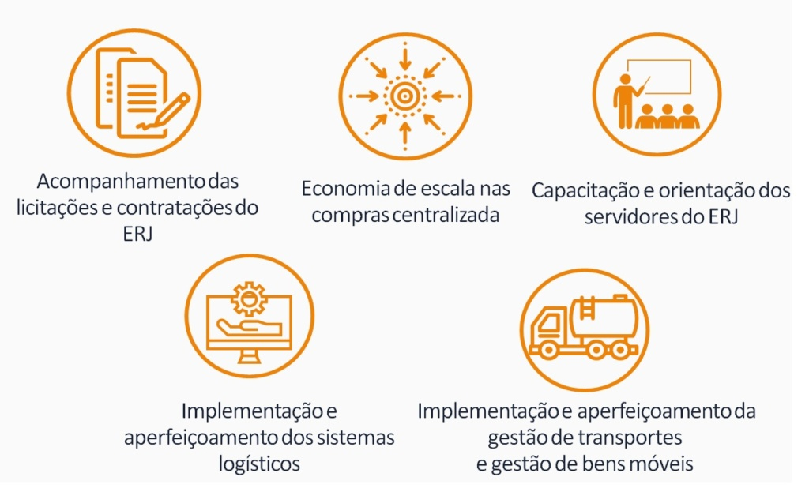
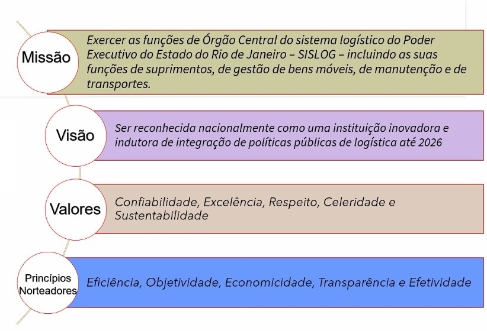
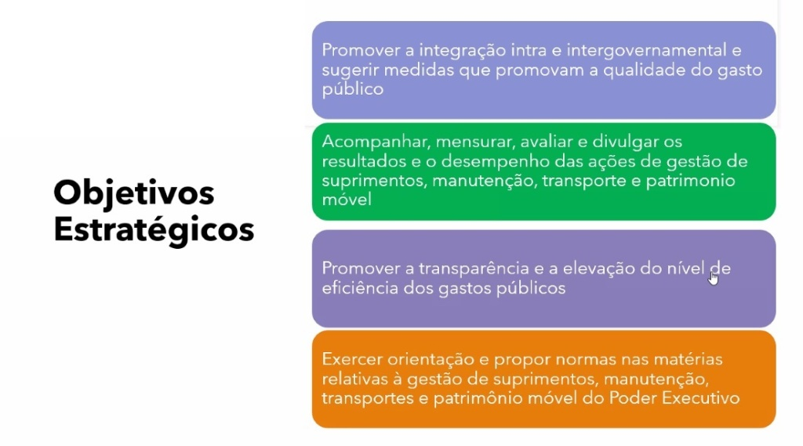
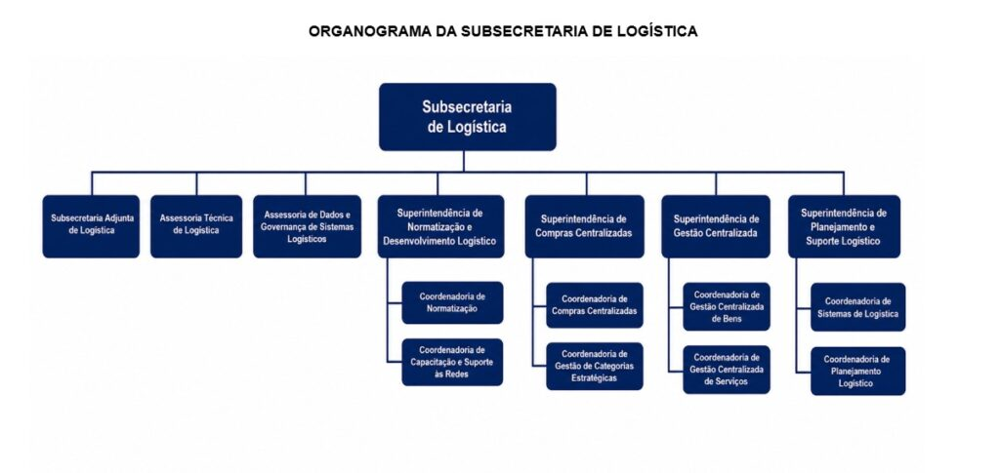

SOBRE A SUBLOG
Subsecretaria de Logística • Secretaria de Estado de Planejamento e Gestão (SEPLAG-RJ)
Para desempenhar as suas funções, a administração pública há muito é um grande consumidor de materiais e serviços. Para atender às necessidades de suprimento do Estado, a área logística trabalha incessantemente para assegurar que os insumos demandados estejam disponíveis nas quantidades, prazos e locais apropriados. Além da compra de bens e serviços, a função logística dedica-se também ao atendimento das necessidades de transporte e manutenção.
ATRIBUIÇÕES DA SUBSECRETARIA DE LOGÍSTICA
Órgão Central do SISLOG
Exercer as funções de Órgão Central do Sistema Logístico do Poder Executivo do Estado do Rio de Janeiro – SISLOG, incluindo as suas funções de inteligência logística, contratações estratégicas e gestão centralizada de bens e serviços.
Integração e Qualidade do Gasto
Promover a integração intra e intergovernamental e sugerir medidas estruturantes que promovam a melhoria contínua da qualidade do gasto público em todo o ecossistema fluminense.
Resultados, Controle e Normatização
Acompanhar, avaliar, mensurar e divulgar os resultados e o desempenho das ações de gestão de atividades logísticas, promovendo a transparência, o controle e a elevação do nível de eficiência dos gastos públicos e exercer orientação e propor normas nas matérias afeitas ao SISLOG.
As figuras a seguir representam o resumo gráfico das atribuições, dos pilares estratégicos e dos objetivos norteadores da Subsecretaria de Logística:



ESTRUTURA ORGANIZACIONAL E ATRIBUIÇÕES
Clique em cada unidade para visualizar suas respectivas atribuições e competências legais.
O organograma a seguir apresenta a estrutura organizacional da Subsecretaria de Logística e a disposição de suas unidades subordinadas no âmbito da SEPLAG-RJ:

- Auxiliar o Subsecretário na coordenação, supervisão e gerenciamento das atividades desenvolvidas pelas áreas da SUBLOG;
- Acompanhar a execução de projetos estratégicos e o monitoramento do cumprimento de metas institucionais da Subsecretaria;
- Realizar o acompanhamento do cumprimento de metas e a evolução de indicadores estratégicos da área de atuação da SUBLOG;
- Articular a governança das atividades desenvolvidas pelas áreas da SUBLOG, promovendo o alinhamento, a integração e a coordenação entre elas;
- Substituir o Subsecretário de Logística em seus impedimentos e representá-lo junto a órgãos e entidades, quando designado.
- Gerenciar e aprimorar os sistemas informatizados do SISLOG, assegurando a operacionalidade e a melhoria contínua dos sistemas;
- Administrar e executar o serviço de atendimento e de operação assistida aos usuários dos sistemas informatizados do SISLOG;
- Levantar e analisar requisitos para desenvolvimento de sistemas, elaborar documentação, desenvolver, testar e implementar os sistemas desenvolvidos;
- Assegurar e realizar a sustentação dos sistemas existentes sob a responsabilidade do Órgão Central de logística;
- Administrar o Portal de Compras do Estado e apoiar a atualização dos portais das redes logísticas;
- Propor melhorias aos sistemas informatizados do SISLOG e atualizá-los de acordo com as normas legais em vigor;
- Apoiar a execução das capacitações e treinamentos dos usuários na operação dos sistemas informatizados de logística;
- Prover informações das bases de dados dos sistemas informatizados do SISLOG;
- Assegurar a evolução tecnológica dos sistemas informatizados do SISLOG, alinhadas à estratégia da Subsecretaria.
- Gerenciar as atividades da Coordenadoria de Normatização e da Coordenadoria de Políticas e Redes de Logística;
- Propor os atos normativos, as diretrizes, os planos, os projetos de competência da SUBLOG, nas atividades relacionadas às funções logísticas;
- Gerenciar a análise e acompanhamento dos dados de gastos do Executivo visando apoiar a tomada de decisões;
- Atuar como representante do ERJ no GT Compras Públicas do CONSAD;
- Autorizar as solicitações dos órgãos/entidades para realização de Sistema de Registro de Preços – SRP;
- Autorizar as transferências de processos entre Unidades Gestoras no SIGA;
- Autorizar a liberação de Chave Especial para Empenhamento no SIGA;
- Atuar como ponto focal da Subsecretaria na Comissão de Gestão de Documentos da Secretaria;
- Atuar como ponto focal da Subsecretaria no Escritório de Processos da Secretaria.
- Preparar e revisar os atos normativos, as diretrizes, os planos, os projetos de competência da SUBLOG, nas atividades relacionadas às funções logísticas;
- Realizar consultas públicas das propostas de atos normativos para recebimento de críticas e sugestões;
- Controlar as portarias editadas pelo Subsecretário de Logística;
- Registrar, efetivar e controlar no SIGA, de acordo com normas vigentes, as ocorrências das penalidades restritivas ao direito de licitar e contratar, aplicadas aos fornecedores pelos órgãos e pelas entidades do Poder Executivo do Estado do Rio de Janeiro, bem como aos condenados por improbidade administrativa, conforme decisão judicial;
- Acompanhar as publicações de atos normativos e jurisprudências do Tribunal de Contas da União, do Tribunal de Contas do Estado do Rio de Janeiro e dos demais órgãos de controle relacionadas às atividades da SUBLOG, em especial, no que diz respeito ao tema de licitações e contratos;
- Gerir o Compêndio Licitações e Contratos – Lei n.º 14.133/2021 e o Compêndio Licitações e Contratos – Lei n.º 8.666/1993;
- Atualizar a legislação constante do Portal de Compras;
- Participar no Subgrupo de legislação e estratégias do GT Compras Públicas do CONSAD, com o objetivo de proposição de regulamentos da Lei n.º 14.133/2021 (Nova Lei de Licitações e Contratos);
- Analisar as solicitações visando auxiliar a tomada de decisão por outros setores da Subsecretaria.
- Analisar e acompanhar as estatísticas de gastos do Executivo visando apoiar a tomada de decisões;
- Receber proposições e orientar sobre diretrizes e procedimentos para avaliar os resultados de programas e ações das atividades relacionadas à logística, com base em estatísticas;
- Planejar e elaborar indicadores, estudos, demonstrativos e relatórios gerenciais com foco no planejamento, monitoramento e avaliação das atividades relacionadas à logística, visando apoiar a tomada de decisões;
- Auxiliar na divulgação de estatísticas e indicadores para a promoção da transparência pública;
- Articular intragovernamental e intergovernamental o acesso a sistemas de informações e bancos de dados gerenciais para coletar, compatibilizar, consolidar e disseminar dados de natureza estatística, visando subsidiar o processo decisório do Órgão Central de Logística;
- Atuar na gestão das Políticas de Logística, incluindo as de Seguro e de Licitação Internacional;
- Auxiliar o Gerente Geral da REDELOG na articulação e integração das Redes de Logística;
- Assistir o Gerente Geral da REDELOG na padronização dos procedimentos relativos às atribuições dos integrantes das Redes de Logística.
- Definir a estratégia de contratações das categorias estratégicas;
- Gerenciar a busca de soluções inovadoras no mercado para as necessidades estratégicas e em comum dos órgãos e entidades do Poder Executivo do Estado do Rio de Janeiro;
- Gerenciar a fase preparatória da contratação e os procedimentos licitatórios e de contratação direta relativos aos bens e serviços decorrentes das estratégias e soluções desenhadas, gerando relatórios estatísticos capazes de orientar a tomada de decisão;
- Gerenciar a elaboração de documentos que orientem os órgãos e entidades sobre como proceder nas contratações estratégicas que sejam de necessidade em comum a todo o Poder Executivo do Estado do Rio de Janeiro, mas que não sejam passíveis de centralização.
- Propor as políticas para as contratações das categorias estratégicas, da Política de Gestão Estratégica de Suprimentos, considerando as necessidades em comum dos órgãos e entidades do Poder Executivo do Estado do Rio de Janeiro, visando ao aumento do poder de barganha do governo frente ao mercado, ganhos de escala e redução de custos de transação;
- Estudar os melhores modelos de contratação e buscar soluções inovadoras no mercado para as necessidades estratégicas e em comum dos órgãos e entidades do Poder Executivo do Estado do Rio de Janeiro, visando à sustentabilidade, eficiência administrativa, melhoria dos processos, transparência e melhoria dos gastos públicos;
- Elaborar a fase preparatória da contratação dos itens sob sua responsabilidade;
- Estabelecer e monitorar os indicadores de economicidade das compras centralizadas;
- Elaborar documentos que orientem os órgãos e entidades sobre como proceder nas contratações estratégicas que sejam de necessidade em comum a todo o Poder Executivo do Estado do Rio de Janeiro, mas que não sejam passíveis de centralização;
- Divulgar as Compras Centralizadas para dar transparência dos gastos governamentais e aprimorar a comunicação com os órgãos e entidades.
- Realizar a fase preparatória da contratação das compras centralizadas relativas às categorias estratégicas;
- Realizar a fase preparatória da contratação das compras centralizadas relativas aos itens de baixo potencial estratégico, mas de uso em comum a toda administração;
- Realizar os procedimentos licitatórios e de contratação direta, relativos aos bens e serviços, decorrentes das categorias estratégicas e soluções desenhadas;
- Gerir, padronizar e sanear o Catálogo de Materiais e Serviços, analisando requisições, catalogando novos objetos, orientando e registrando as solicitações recebidas e eliminando os itens em desuso ou obsoletos;
- Providenciar estudos sobre a participação do Estado do Rio de Janeiro em Acordos de Compras Governamentais e em assuntos relacionados às licitações internacionais.
- Gerenciar as atas de registro de preços referentes aos bens e serviços comuns provenientes de contratações centralizadas;
- Gerenciar, no nível central, os sistemas de gestão de frotas, combustíveis, bens de consumo e bens móveis;
- Gerenciar o cadastro de fornecedores do Estado do Rio de Janeiro;
- Supervisionar as atividades de aquisição, distribuição, alienação, conservação, guarda, manutenção e utilização de veículos oficiais, conforme normas e procedimentos em vigor;
- Supervisionar e controlar as atividades de fornecimento de combustíveis para os órgãos e entes integrantes do SISGETRANSP.
- Gerenciar as atas de registro de preços de serviços comuns, provenientes de contratações centralizadas de serviços, prestando assessoramento aos Órgãos participantes, orientando e acompanhando a implantação dos modelos de compras e contratações pelos órgãos e entidades;
- Prestar assessoramento relativo às atividades de transporte, manutenção, fornecimento de combustíveis, bem como quaisquer serviços comuns, provenientes de aquisições centralizadas;
- Orientar os responsáveis pela gestão de frota e combustíveis acerca das normas estabelecidas nas políticas e diretrizes estabelecidas pelo órgão central do SISGETRANSP;
- Realizar o credenciamento e liberar os registros dos fornecedores efetuados diretamente através do portal de compras, ou daqueles realizados pelos gerenciadores do SIGA nos órgãos e nas entidades do Poder Executivo;
- Manter banco de dados atualizado com informações referentes à gestão das Atas de Registro de Preços, de forma a subsidiar a revisão e o aperfeiçoamento dos modelos de compras centralizadas de serviços;
- Analisar os processos de pedido de autorização para a realização de registro de preços;
- Executar a gestão do Almoxarifado Virtual.
- Executar a implantação e a gestão do Sistema de Bens Móveis – SBM RJ;
- Prestar assessoramento aos gestores de bens dos órgãos/entidades do Poder Executivo no tocante à gestão de bens móveis;
- Elaborar/revisar normativos e criar conteúdos instrutivos para fundamentar a adequada prática de gestão de bens móveis;
- Prestar assessoramento aos Órgãos participantes das Atas de Registro de Preços provenientes de aquisições centralizadas de bens, orientando e acompanhando a implantação dos modelos de compras e contratações pelos órgãos e entidades;
- Manter banco de dados atualizado com informações referentes à gestão das Atas de Registro de Preços, de forma a subsidiar a revisão e o aperfeiçoamento dos modelos de compras centralizadas de bens;
- Gerenciar as atas de registro de preços de bens comuns, provenientes de contratações centralizadas, prestando assessoramento aos Órgãos participantes, orientando e acompanhando a implantação dos modelos de compras e contratações pelos órgãos e entidades.
- Gerenciar as atividades de acompanhamento das licitações e contratações do ERJ;
- Prover apoio técnico operacional em logística às diversas áreas de atuação da SEPLAG, seja na capacitação de servidores, no desenvolvimento de conteúdo institucional, inclusive no âmbito das redes de logística;
- Apoiar na elaboração de indicadores ou na solução de demandas diversas das setoriais;
- Dar suporte nos sistemas logísticos para aperfeiçoamento, manutenção dos sistemas legados e em novas versões a serem desenvolvidas;
- Desenvolver mecanismos de aprimoramento das práticas de governança nas contratações públicas;
- Orientar as atividades extraordinárias e urgentes demandadas pela SEPLAG e pela SUBLOG.
- Emitir Notas Técnicas com análises sobre os processos de contratação realizados pelos Órgãos do ERJ;
- Apoiar a Secretaria de Planejamento e Gestão na disponibilização de informações e indicadores logísticos;
- Servir de apoio aos órgãos setoriais e entidades na solução de demandas estratégicas para a realização das contratações públicas;
- Fazer o acompanhamento dos programas de políticas públicas desenvolvidos pelo governo;
- Contribuir na elaboração dos normativos de competência da SUBLOG e nas atividades relacionadas às funções logísticas;
- Fomentar estratégias de boas práticas administrativas nas contratações do ERJ.
- Promover a educação continuada em logística dos órgãos e entidades do ERJ, no âmbito das redes de logística, por meio de instruções, palestras, mentorias, simpósios, workshops e cursos focados na gestão por competências;
- Coordenar as atividades de comunicação, criação de vídeos e informes logísticos;
- Apoiar no desenvolvimento dos conteúdos institucionais e educacionais para as atribuições da SUBLOG e da SEPLAG;
- Assumir a função de ponto focal do SEI, atendendo às demandas internas da Subsecretaria;
- Conduzir o processo de aperfeiçoamento e manutenção nos sistemas logísticos legados e em novas versões a serem desenvolvidas;
- Executar as atividades extraordinárias e urgentes demandadas pela SEPLAG e pela Subsecretaria de Logística.
HISTÓRICO DA SUBSECRETARIA DE LOGÍSTICA
Com a fusão dos antigos Estados do Rio de Janeiro e da Guanabara em 1975, uma nova estrutura para a administração estadual foi dada através do Decreto nº 1, de 15 de março de 1975, tendo sido então criada a SAD – Secretaria de Administração. A SAD, por sua vez, contava com a Superintendência de Suprimentos, responsável pelas funções logísticas estaduais.
Instituído formalmente o Sistema de Suprimentos do Estado do Rio de Janeiro, coordenado pela Superintendência de Suprimentos vinculada à SAD, unificando os fluxos e cadastros de compras.
Transformação da SAD em SARE – Secretaria de Administração e Reestruturação, à qual a área de suprimentos continuou vinculada, passando a denominar-se Superintendência de Suprimentos de Bens e Serviços.
Após a sucessão da SARE pela SEPLAG – Secretaria de Estado de Planejamento e Gestão, a logística passou a ser conduzida pela Superintendência Central de Logística e Patrimônio. Pouco depois, foi desmembrada em duas subsecretarias: a SUBLO (Subsecretaria de Recursos Logísticos) e a SUBPA (Subsecretaria de Patrimônio).
A SUBLO e a SUBPA foram novamente fundidas, resultando na criação da SUBLOP – Subsecretaria de Logística e Patrimônio. Em 2016, quando a SEFAZ incorporou a SEPLAG, a estrutura da SUBLOP foi mantida integrada à Secretaria de Estado de Fazenda e Planejamento.
Em novembro de 2017, a então SUBLOP recebeu a Superintendência de Processo Digital e passou a denominar-se Subsecretaria de Gestão – SUBGEST.
A SUBGEST foi desmembrada em duas áreas vinculadas à SEFAZ: a DGPI (Diretoria de Gestão do Patrimônio Imóvel) e a SUBGEST, tendo esta última incorporado as temáticas de logística, modernização e gestão integrada, desempenho institucional, planejamento estratégico, escritório de processos e gestão do SEI-RJ.
A Subsecretaria de Gestão foi transferida da estrutura da SEFAZ para a estrutura da Secretaria de Estado da Casa Civil e Governança (SECCG), com a instituição oficial da Subsecretaria de Logística (SUBLOG) em sua composição.
Com a alteração da nomenclatura da SECCG para Secretaria de Estado de Planejamento e Gestão (SEPLAG) e a transferência de parte da estrutura para a Casa Civil, a SUBLOG consolidou-se como o Órgão Central do Sistema Logístico do Poder Executivo (SISLOG), estruturada sob a governança da SEPLAG.
EVOLUÇÃO DA ÁREA DE SUPRIMENTOS NA ESTRUTURA ESTADUAL
A tabela a seguir apresenta resumidamente a evolução histórica da denominação e vínculo da área de suprimentos e logística no Estado do Rio de Janeiro:
| Anos | Setor / Órgão Responsável | Secretaria / Vínculo |
|---|---|---|
| 1975 - 1999 | Superintendência de Suprimentos |
Secretaria de Administração (SAD) |
| 1999 - 2008 | Superintendência de Suprimentos de Bens e Serviços |
Secretaria de Administração e Reestruturação (SARE) |
| 2008 - 2008 |
Superintendência Central de Logística e Patrimônio
Subsecretaria de Gestão Institucional (SUBGI)
|
Secretaria de Estado de Planejamento e Gestão (SEPLAG) |
| 2008 - 2015 | Subsecretaria de Recursos Logísticos (SUBLOG) |
Secretaria de Estado de Planejamento e Gestão (SEPLAG) |
| 2015 - 2017 |
Superintendência de Logística (SUPLOG)
Subsecretaria de Logística e Patrimônio (SUBLOP)
|
Secretaria de Estado de Planejamento e Gestão (SEPLAG) |
| 2017 |
Superintendência de Logística (SUPLOG)
Subsecretaria de Logística e Patrimônio (SUBLOP)
|
Secretaria de Estado de Fazenda e Planejamento (SEFAZ) |
| 2017 - 2018 |
Superintendência de Logística (SUPLOG)
Subsecretária de Gestão (SUBGEST)
|
Secretaria de Estado de Fazenda e Planejamento (SEFAZ) |
| 2019 - 2020 | Subsecretaria de Logística (SUBLOG) |
Secretaria de Estado da Casa Civil e Governança (SCCG) |
| 2020 - Atual | Subsecretaria de Logística (SUBLOG) |
Secretaria de Estado de Planejamento e Gestão (SEPLAG) |
CANAIS DE ATENDIMENTO E CONTATO
Endereço
Avenida Erasmo Braga, nº 118, 8º andar
Centro – Rio de Janeiro/RJ